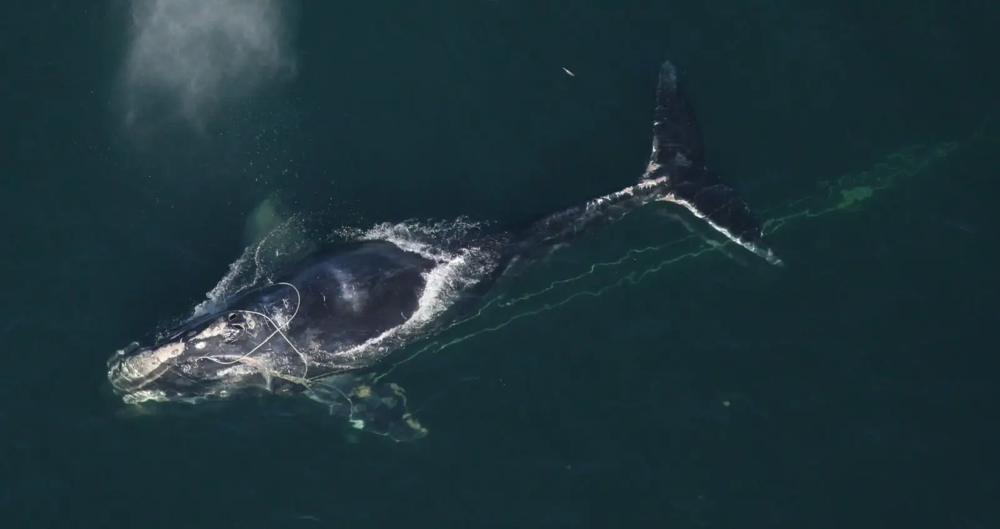
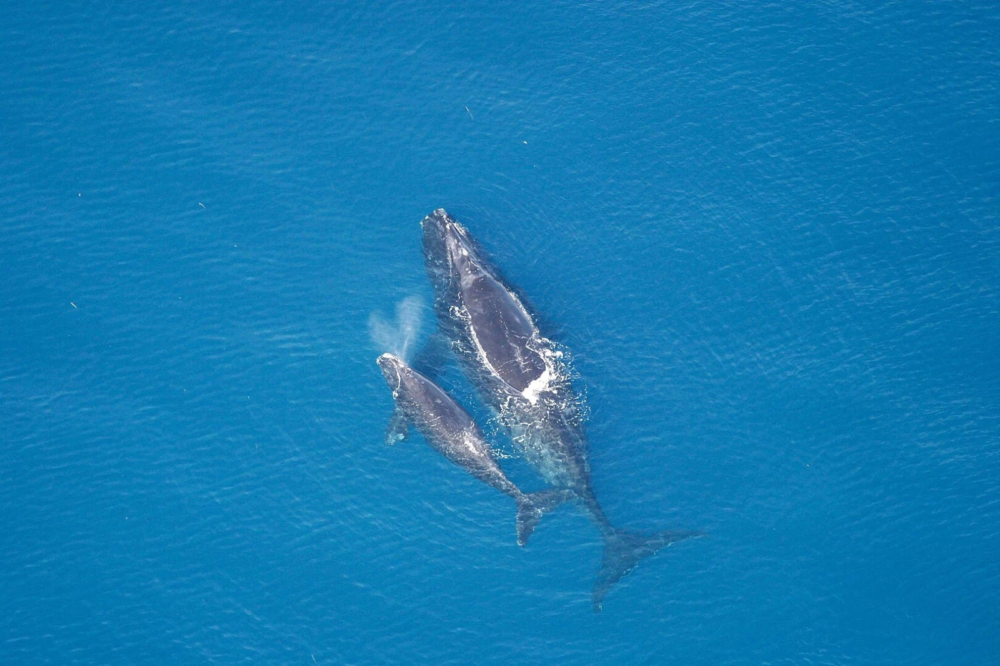
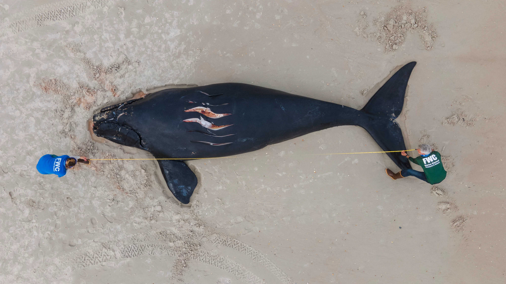
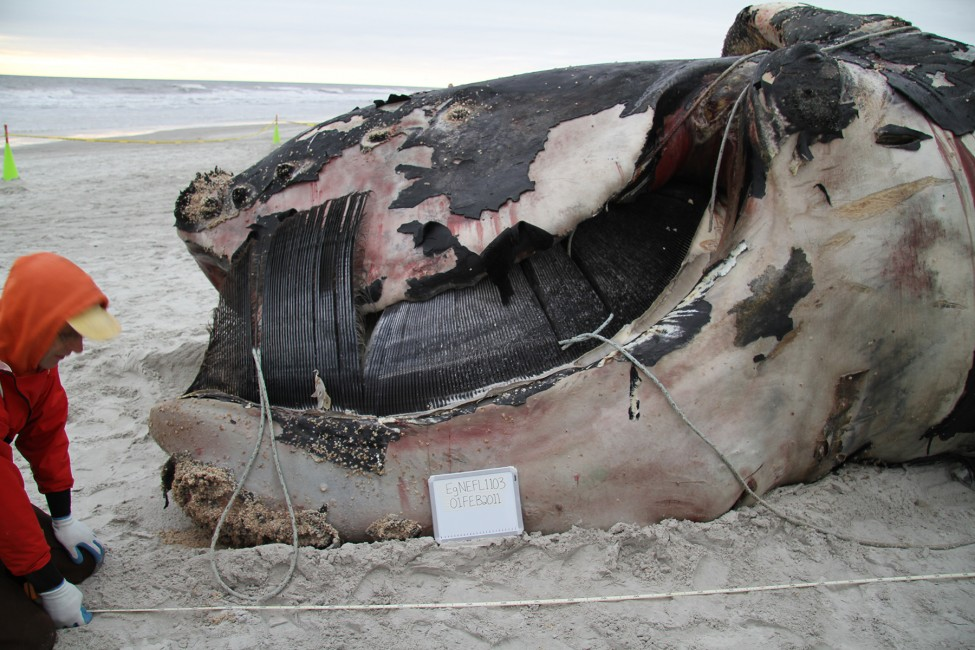
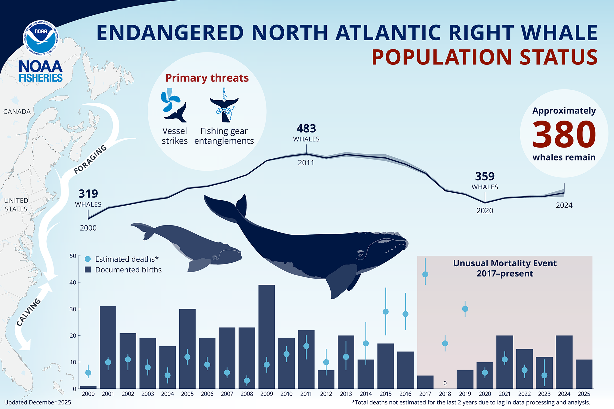

The North Atlantic Right Whale




About the Whale
The North Atlantic Right Whale is considered one of the most endangered animals in the world, and the most endangered of all large whales. They travel along the Eastern Seaboard of North America. The whale lives in temperate and sub-polar marine ecosystems in the western Atlantic Ocean. They are quieter and less social than any other whale. This whale has acrobatic behavior, such as breaching, tail slapping, and flipper waving, which they may use for communication, courtship, or play.
Endangerment Level
This North Atlantic Right Whale is considered critically endangered. Currently, only about 380 whales are surviving today. NOAA Fisheries estimate that there are 70 reproductively active females.
Threats
Their population have been largely reduced by historical over-exploitation by the whaling industry. The name “Right Whale” comes from them being the “right” whale to hunt because they are slow and have a lot of thick blubber. The main threats to the whales are ship collisions, entanglement in fishing nets, and separation from calving areas because of shipping traffic. Another factor is climate change results in habitat degradation.
Prevention
The WWF plans in improving whale protection by addressing threats to whales and making the International Whaling Commission (IWC) more effective to reduce whale threats. There are also programs to move shipping lanes to other locations to try and stop the boat collisions or entanglements. There are programs that people can donate in efforts to help make a change to help stop these threats and save the North Atlantic Right Whales.
Statistics
